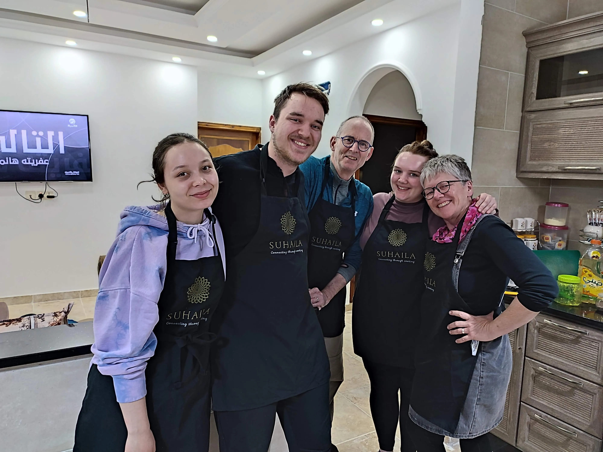
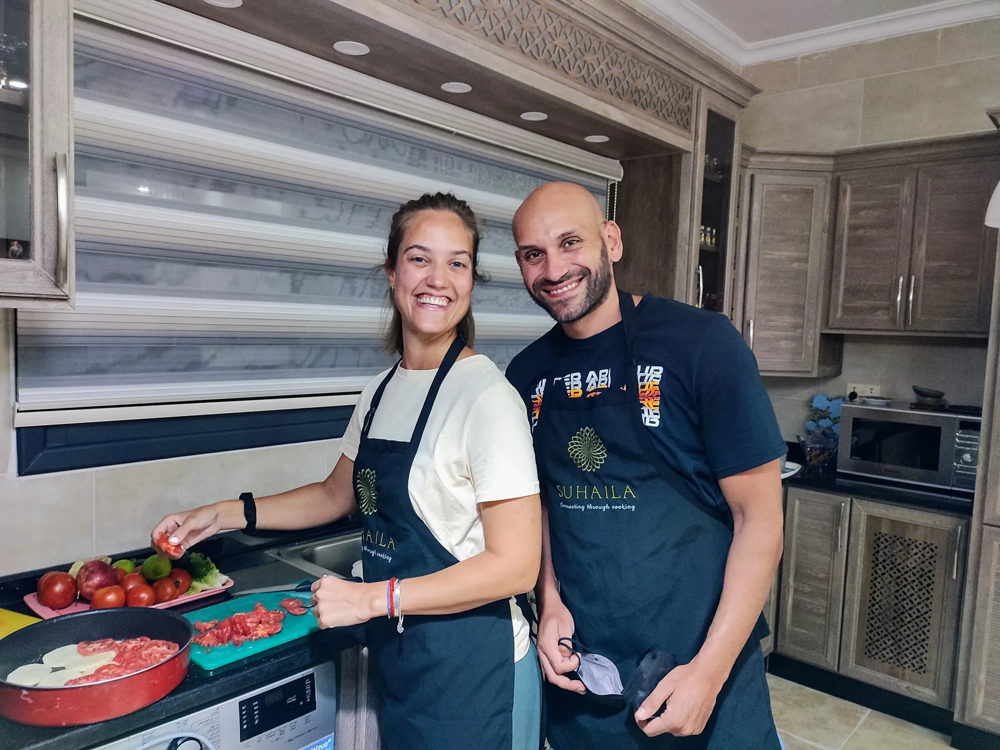
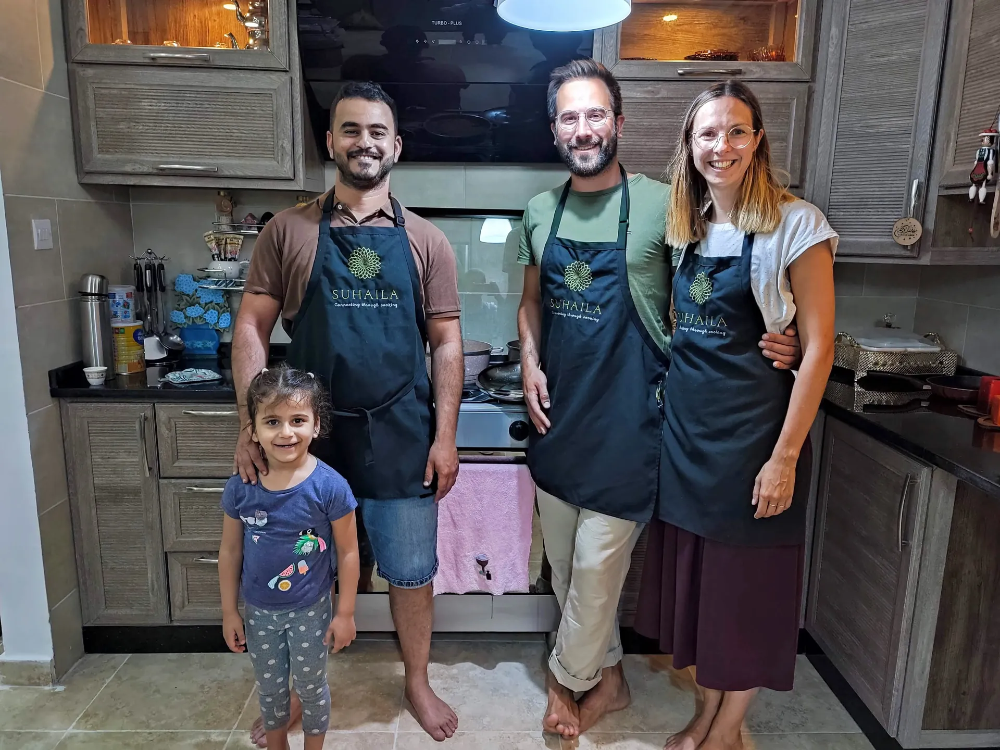

Experience Authentic Jordanian Cuisine: Live Online Cooking Classes
Can't travel to Aqaba? No worries! Suhaila Locals brings the warmth of our family kitchen directly to yours through an engaging and interactive **live online Jordanian cooking class via Zoom**. Join **Agareed**, our passionate culinary expert, and the Suhaila Locals family for a unique cultural immersion. Discover the secrets of preparing traditional Jordanian and Middle Eastern cuisine, all from the comfort and convenience of your home, no matter where you are in the world.
Our virtual cooking experience is more than just a class; it's a journey into Jordanian culture, offering a hands-on opportunity to master ancient recipes and connect with local traditions. Perfect for food enthusiasts, aspiring chefs, or anyone looking for a unique online activity.

Interactive live sessions tailored to your kitchen, ensuring a personalized learning experience.
How Our Virtual Cooking Class Works: Simple & Engaging
Participating in our online cooking class is straightforward. Here's what you can expect:
| Platform | Live via **Zoom** (Secure link provided instantly after booking confirmation). |
|---|---|
| Duration | **2 to 2.5 Hours** of interactive cooking, Q&A, and cultural insights. |
| Preparation | A detailed **ingredient list and easy-to-follow prep instructions** are sent 48 hours in advance, ensuring you're ready to cook. |
| Language | Classes are conducted in **English** and **Arabic**, catering to a global audience. |
| Interaction | Enjoy **live Q&A sessions** and **step-by-step guidance** from Agareed, just like cooking together in person. |
| What You'll Need | A stable internet connection, a device with Zoom, basic kitchen tools, and your pre-prepared ingredients. |
Master Traditional Jordanian Dishes: Hummus, Falafel, Maqluba & More
Embark on a culinary adventure and master these beloved Middle Eastern classics in one comprehensive session. Choose your preferred menu when booking!
- **Hummus & Falafel Workshop:** Dive deep into the art of making the perfect creamy, smooth **Hummus** from scratch, paired with crispy, flavorful **Falafel**. Learn the secrets to achieving authentic taste and texture, a staple of Middle Eastern appetizers.
- **Fattoush Salad:** Discover how to create **Fattoush**, a vibrant and refreshing Levantine bread salad. You'll learn to combine fresh seasonal vegetables, toasted pita bread, and a zesty sumac-lemon dressing for a burst of flavor.
- **Maqluba - The Upside-Down Delight:** Prepare the impressive and iconic **Maqluba**, often called the "upside-down" rice dish. This hearty meal features tender chicken (or lamb), fried vegetables, and aromatic rice, all cooked together and then dramatically inverted onto a serving platter—a true centerpiece of any Jordanian feast.
Each class is designed to be hands-on, allowing you to replicate these dishes with confidence in your own kitchen.
Essential Ingredients & Preparation for Your Online Cooking Class
We make it easy! All ingredients are commonly available at your local grocery store. Here's what to expect:
🍚 Maqluba Class
- ✓ Chicken (1.5 kg)
- ✓ Rice (2 cups)
- ✓ Eggplant, Cauliflower, Potatoes
- ✓ Onions, Garlic
- ✓ Chicken broth (4 cups)
- ✓ Olive oil & spices
🥙 Hummus & Falafel
- ✓ Chickpeas (2 cans)
- ✓ Tahini (1/2 cup)
- ✓ Lemon juice (3 lemons)
- ✓ Fresh Parsley & Cilantro
- ✓ Garlic, Cumin, Paprika
- ✓ Olive oil for frying
Meet Agareed: Your Expert Guide to Jordanian Online Cooking

Agareed: Your Bridge to Jordanian Cuisine
With **decades of culinary experience** passed down through generations, Agareed is more than just a chef; she's a storyteller and a guardian of Jordanian culinary traditions. Her passion for sharing her culture shines through in every class, making complex traditional dishes accessible, easy to understand, and incredibly fun to cook, even through a screen!
Agareed's warm personality and expert guidance ensure that every participant feels confident and inspired. She'll share personal anecdotes, cultural insights, and practical tips that you won't find in any cookbook, making your online cooking experience truly authentic and memorable.
Why Choose Suhaila Locals for Authentic Online Jordanian Cooking Classes?
- **Authenticity:** Learn genuine Jordanian recipes directly from a local family, preserving traditional cooking methods.
- **Interactive & Personal:** Enjoy live, small-group sessions with direct interaction and personalized feedback from Agareed.
- **Cultural Immersion:** Beyond recipes, gain insights into Jordanian culture, history, and the stories behind the food.
- **Convenience:** Participate from anywhere in the world, at a time that suits you, without the need for travel.
- **Skill Building:** Develop new culinary skills and expand your repertoire with unique Middle Eastern dishes.
- **Community:** Connect with fellow food lovers globally and share a memorable cooking experience.
Frequently Asked Questions About Our Online Cooking Classes
Q: What equipment do I need for the online cooking class?
A: You'll need basic kitchen equipment such as pots, pans, cutting board, knives, and common utensils. A detailed list will be provided with your ingredient list.
Q: Do I need prior cooking experience?
A: Not at all! Our classes are designed for all skill levels, from beginners to experienced cooks. Agareed provides clear, step-by-step instructions.
Q: Can I book a private online cooking class for a group?
A: Yes, we offer private classes for families, friends, or corporate teams. Please contact us directly to arrange a custom experience.
Q: What if I have dietary restrictions or allergies?
A: Please inform us during the booking process, and we will do our best to suggest suitable alternatives or modifications for the recipes.
Q: How do I receive the Zoom link and ingredient list?
A: The ingredient list and prep instructions will be sent 48 hours before your class. The Zoom link will be provided upon successful booking confirmation.